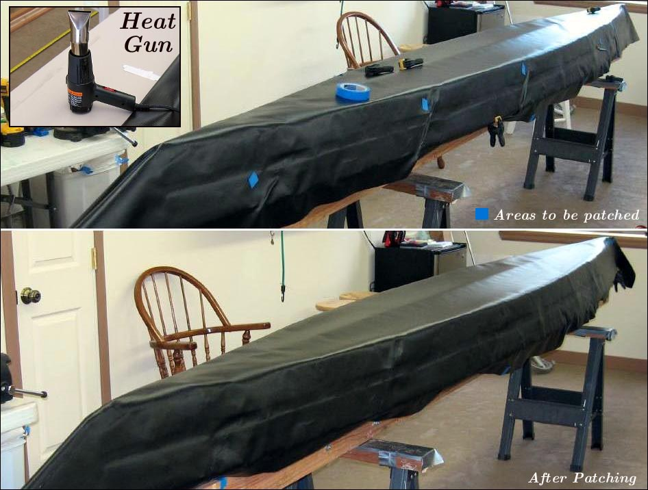

| Sonnet ( Hull Skin) | Menu Last Page Next Page |
|

Reverse the skin and place on the skinning frame. Align the skin along the keel. Clamp the skin in a few places to the gunwales to hold the correct position. Starting at the center, work toward the stems reactivating the vinyl cement with a heat gun and with one hand behind the skin and the other on top. Pull the skin downward from the chines to the gunwales while applying pressure to the skin to achieve good adhesion between the skin and sleeve.
As wrinkles develop, press the wrinkles into a ridge to contain them (See pic 1 above). After completing the skinning process, cut out the wrinkles with a knife, being careful not to cut into the sleeve beneath. Cut narrow patches using 10oz PVC and apply 2 coats of cement to the patch and the skin . When the glue is dry, position the patches and apply heat and pressure to seal the patch ( see pic 2 above) . These few small patches will be barely visible. The skin will tighten up considerably when the sponsons are later "Inflated" and the skin will have a tight/ smooth appearance. Use the {Back} key to return.
|
|
{kind=link}